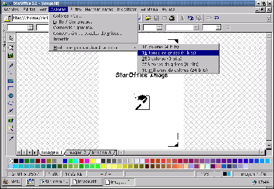
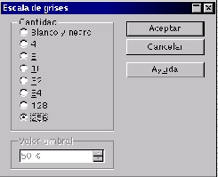

Next: Cambio de dimensiones
Up: Crear
Previous: La ventana de Image
Índice General
Recorriendo desde arriba hacia abajo la ventana principal, vemos:
- La barra de título.
- El menú principal.
- La barra de funciones.
- La barra de objetos del desktop.
- La zona de trabajo, en la que está la ventana del documento Sin nombre1.
- La barra de tareas.
- La ventana del documento.
Si repasamos desde arriba hacia abajo la ventana del documento, nos encontramos:
- La barra de título.
- La barra de objetos de Image.
- La zona de trabajo (donde se prepara la imagen).
- La barra de desplazamiento horizontal, con las pestañas de las imágenes a la izquierda.
- La barra de colores.
- La línea de estado, con información sobre la imagen.
Y si la repasamos de izquierda a derecha, tenemos esto:
- La barra de herramientas.
- La zona de trabajo.
- La barra de desplazamiento vertical.
- Cambio de la profundidad de color.
Figura 5.48:
Selector de Colores
|

|
Figura 5.49:
Conversión a grises
|

|
Para cambiar el número de colores de la imagen se elige en el menú [Colores] el submenú
[Modificar profundidad de color] y se toma una de sus posibilidades, ver figura
5.48.
Si el cambio consiste en cambiar una imagen a color en una imagen en escala de grises, se pueden
elegir más opciones tomando en el menú [Colores] la opción [Conversión] de escalas de grises
para abrir el cuadro de diálogo Escala de grises, que también se muestra a la derecha.
5.49
Next: Cambio de dimensiones
Up: Crear
Previous: La ventana de Image
Índice General
Proyecto Cursos - LuCAS - http://lucas.hispalinux.es/htmls/cursos.html